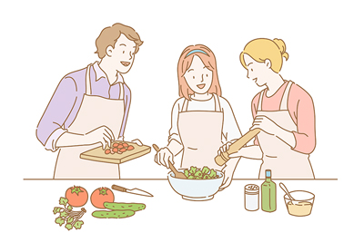
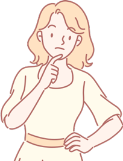
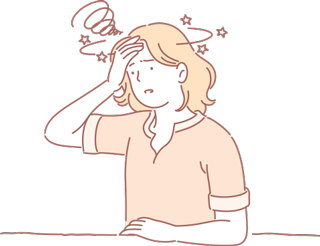

-
1회기
왜 우리 아이에게
이런 일이 생겼을까요? -
 2회기
2회기
학교폭력
대응방법 알기 -
 3회기
3회기
예방과 재발
방지하기 -
 4회기
4회기
부모는 무엇을 해야 할까요?
- 시작하기
- 첫째,
학교폭력 실태 - 둘째,
청소년 발달특성과
학교폭력 - 셋째,
피해를 말하지 못하는
아이의 속마음 - 넷째,
내가 보였던
반응 되감기 - 정리하기
내가 보였던 반응 되감기
다음 부모와 자녀의 대화를 보고 혹시 부모가 놓치고 있는 부분이 어떤 건지 찾아보겠습니다.

○○이는 중학교2학년이다. 평소 얌전하고 조용한 편이지만, 친한 친구들이나 가족들과는 장난도 잘한다. 성적도 중상위권으로, 수학이 조금 더 잘 나왔으면 좋겠다는 바램을 가지고 있다.
어느 날, 학원에 가기 전에 집의 식탁에 앉아서 저녁을 먹고 있는 엄마와 ○○. ○○이는 무심하게 엄마에게 말한다.
엄마, 우리 반에 왕따 당하는 애가 있어.애가 조용하고 착하긴 한데,
날라리애들이 좀 괴롭히는거 같애.
반 애들도 가만있고.

○○이의 말에 엄마는 손사래를 치며 말한다.
얘, 너도 가만 있어.괜히 걔랑 놀지 마라.
너까지 왕따 당할라.

그 이후 ○○는 더 이상 엄마와 이야기를 나누지 않았다.
엄마는 뒤늦게서야 ○○이가 바로 자신이 말한 왕따 친구였음을 알게 된다.
엄마는 뒤늦게서야 ○○이가 바로 자신이 말한 왕따 친구였음을 알게 된다.
 자녀가 부모에게 도움을 청하지 못한 이유는 무엇일까요?
자녀가 부모에게 도움을 청하지 못한 이유는 무엇일까요?
 자녀와 대화할 때는 자녀의 말이나 행동 밑에 있는 마음을 이해하는 것이 중요합니다.
자녀와 대화할 때는 자녀의 말이나 행동 밑에 있는 마음을 이해하는 것이 중요합니다.
평소 자녀의 의사소통 경험을 살펴보도록 하겠습니다.
나와 비슷한 상황을 선택하고 질문에 따라 작성해 보도록 하겠습니다.
나와 비슷한 상황을 선택하고 질문에 따라 작성해 보도록 하겠습니다.
아이가 학교에 가지 않으려고 했을 때
나의 첫 반응
(처음 던진 말이나 행동)
그때 내 마음
이에 대한
아이의 반응과 마음
아이가 집에 오자마자 짜증 섞인 모습으로 가방을 던지고 방 안으로 들어갔을 때
나의 첫 반응
(처음 던진 말이나 행동)
그때 내 마음
이에 대한
아이의 반응과 마음
부모의 돈이 없어졌을 때
나의 첫 반응
(처음 던진 말이나 행동)
그때 내 마음
이에 대한
아이의 반응과 마음
 평소 자녀와 나눈 의사소통을 점검해 보니 어떠신가요? 나의 의도와는 다르게 무심코 한 말에서 자녀와 관계에 부정적인 영향을 미치기도 합니다. 아이의 입장을 생각해 보면서 대화를 시도해 보는 건 어떨까요?
평소 자녀와 나눈 의사소통을 점검해 보니 어떠신가요? 나의 의도와는 다르게 무심코 한 말에서 자녀와 관계에 부정적인 영향을 미치기도 합니다. 아이의 입장을 생각해 보면서 대화를 시도해 보는 건 어떨까요?
 부모가 자녀의 행동이면에 있는 의도와 소망을 생각해보고, 보다 민감하게 자녀의 행동을 살펴보는 것이 필요합니다.
부모가 자녀의 행동이면에 있는 의도와 소망을 생각해보고, 보다 민감하게 자녀의 행동을 살펴보는 것이 필요합니다.
 학교폭력 피해로 인해 자살생각까지 하는 경우, 부모가 이를 알아차려주고, 부모의 마음을 의도대로 잘 전달하는 것이 중요합니다.
학교폭력 피해로 인해 자살생각까지 하는 경우, 부모가 이를 알아차려주고, 부모의 마음을 의도대로 잘 전달하는 것이 중요합니다.